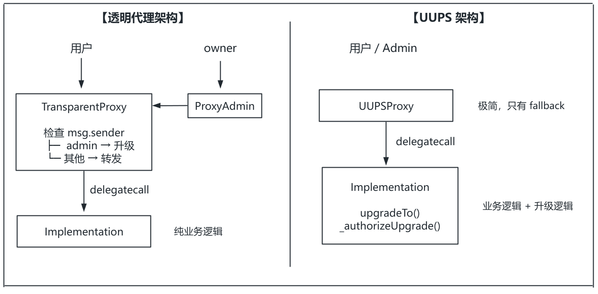

代理合约与可升级合约系列（二） ：透明代理 vs UUPS
约 1695 个字 77 行代码 4 张图片 预计阅读时间 7 分钟
上一篇我们理解了 delegatecall 和存储槽冲突问题。本篇将深入两大主流代理模式。
函数选择器冲突 ¶
在实现可升级代理时，我们遇到了新问题。
假设代理合约需要一个 upgrade() 函数来更新逻辑合约地址：
contract Proxy {
address public implementation;
function upgrade(address newImpl) public {
implementation = newImpl;
}
fallback() external payable {
// delegatecall to implementation
}
}
问题来了：如果逻辑合约也有一个 upgrade() 函数呢？
当用户调用 upgrade() 时，EVM 会先检查代理合约是否有匹配的函数。如果有，就直接执行代理合约的函数，永远不会触发 fallback。
结果：逻辑合约的 upgrade() 函数无法被调用。
更危险的是：不同函数可能有相同的函数选择器。函数选择器只有 4 字节，存在约 1/43 亿的碰撞概率。比如 clash550254402() 和 proxyAdmin() 的选择器完全相同。
解决方案一：透明代理（Transparent Proxy）¶
透明代理的核心思路很简单：代理合约除了 fallback，不暴露任何公开函数。
但没有公开函数，怎么升级？答案是：通过 msg.sender 来区分调用者。

为什么叫「透明
对于普通用户来说，代理合约是「透明」的——他们看不到任何代理相关的函数，所有调用都会被转发。代理合约的管理功能只对管理员「可见
contract TransparentProxy {
address immutable admin;
constructor(address _admin) {
admin = _admin;
}
fallback() external payable {
if (msg.sender == admin) {
// 执行升级逻辑
} else {
// delegatecall 到逻辑合约
}
}
}
规则： - admin 调用：路由到升级逻辑 - 普通用户调用：路由到逻辑合约
这完全消除了函数选择器冲突——因为代理合约根本没有公开函数。
OpenZeppelin 的实现结构 ¶
但上述设计有个问题：admin 无法直接使用合约功能，因为它的调用会被路由到升级逻辑。
OpenZeppelin 的解决方案是引入 ProxyAdmin 合约：

- 代理合约的 admin 是 ProxyAdmin 合约（地址固定）
- ProxyAdmin 的 owner 是真正的管理员
- owner 通过 ProxyAdmin 间接升级代理
- owner 也可以直接调用代理使用合约功能（因为 msg.sender 是 owner，不是 admin）
OpenZeppelin 合约继承结构：
Proxy.sol (抽象基类)
│
└── ERC1967Proxy.sol (实现 EIP-1967 槽位)
│
└── TransparentUpgradeableProxy.sol
│
└── 配合 ProxyAdmin.sol 使用
contract ProxyAdmin {
address public owner;
function upgradeAndCall(
ITransparentUpgradeableProxy proxy,
address implementation,
bytes memory data
) public onlyOwner {
proxy.upgradeToAndCall(implementation, data);
}
}
关键设计：
- 代理合约只有
fallback()函数 - 所有管理功能通过 ProxyAdmin 调用
- 管理员地址存储在 EIP-1967 槽位
优点：
- 彻底消除函数选择器冲突
- 升级逻辑在代理合约中，逻辑合约不需要包含升级代码
缺点：
- 需要额外部署 ProxyAdmin 合约
- 每次调用都要检查
msg.sender == admin，增加 gas 消耗
解决方案二：UUPS（通用可升级代理标准）¶
UUPS（ERC-1822）采用了不同的策略：把升级逻辑放在逻辑合约中。

升级是如何工作的？¶
UUPS 的升级过程：
- 管理员调用 Proxy 的
upgradeTo(newImpl) - Proxy 通过
fallback()将调用 delegatecall 给当前实现合约 - 实现合约的
upgradeTo()被执行 - 由于是 delegatecall，修改的是 Proxy 的存储
- Proxy 的实现地址被更新为
newImpl
Admin ──upgradeTo(V2)──► Proxy ─delegatecall─► Impl V1
│ │
│ upgradeTo() 修改 │
│ Proxy 的存储 │
▼ │
implementation = V2 ◄────────┘
代码结构 ¶
代理合约极其简单：
contract UUPSProxy {
constructor(address _implementation) {
assembly {
sstore(
0x360894a13ba1a3210667c828492db98dca3e2076cc3735a920a3ca505d382bbc,
_implementation
)
}
}
fallback() external payable {
// 读取实现地址并 delegatecall
}
}
逻辑合约需要继承 OpenZeppelin 的 UUPSUpgradeable：
import "@openzeppelin/contracts-upgradeable/proxy/utils/UUPSUpgradeable.sol";
contract MyContract is UUPSUpgradeable {
// 业务逻辑...
function _authorizeUpgrade(address newImplementation)
internal
override
onlyOwner
{}
}
proxiableUUID：安全检查 ¶
UUPS 有个巧妙的安全机制：升级前会检查新合约是否兼容。
升级时，会调用新合约的 proxiableUUID()：
- 如果返回正确的存储槽地址，说明新合约是 UUPS 兼容的
- 如果调用失败或返回值错误，升级被拒绝
这防止了意外升级到一个没有升级能力的合约——那将导致合约永远无法再升级。
UUPS 的风险 ¶
风险一：忘记实现升级函数
如果新版本的实现合约没有 upgradeTo() 函数，合约将永久失去升级能力：
防护措施：OpenZeppelin 要求实现合约继承 UUPSUpgradeable，并实现 _authorizeUpgrade() 钩子。
风险二：未初始化的实现合约
如果有人直接调用实现合约的 initialize()，他可以成为实现合约的 owner，然后调用 upgradeTo() 指向一个包含 selfdestruct 的合约。这曾经是真实的攻击向量（Wormhole 事件
防护：在构造函数中调用 _disableInitializers()：
透明代理 vs UUPS：如何选择？¶
| 特性 | 透明代理 | UUPS |
|---|---|---|
| 升级逻辑位置 | 代理合约 | 逻辑合约 |
| Gas 成本 | 较高（每次检查 admin） | 较低 |
| 代理合约大小 | 较大 | 最小 |
| 逻辑合约大小 | 较小 | 较大（含升级代码） |
| 风险 | 较低 | 较高（可能丢失升级能力） |
| 适用场景 | 通用场景、安全优先 | 高频调用、gas 敏感 |
选择建议：
- 逻辑合约接近 24KB 限制 → 透明代理
- 需要极致 gas 优化 → UUPS
- 追求简单安全 → 透明代理
OpenZeppelin 当前推荐使用 UUPS，因为它更轻量且灵活。
架构对比图 ¶

其他代理模式简介 ¶
除了透明代理和 UUPS，还有几种常见模式，这里简单了解即可：
Beacon Proxy¶
多个代理共享同一个逻辑合约地址，通过 Beacon 合约统一管理。更新 Beacon 一次，所有代理同时升级。
适用场景：需要批量部署和批量升级，如 NFT 工厂。
Diamond Proxy（EIP-2535）¶
一个代理可以指向多个逻辑合约，通过函数选择器路由到不同的 Facet。
适用场景：超大型合约，需要突破 24KB 限制。
Minimal Proxy（EIP-1167）¶
极简克隆模式，所有克隆共享同一份逻辑代码，部署成本极低（约 45 字节
适用场景：需要大量部署相同逻辑的合约，如用户钱包。
小结 ¶
本篇我们学习了：
- 函数选择器冲突问题：代理合约的公开函数会遮蔽逻辑合约的同名函数
- 透明代理：通过检查 msg.sender 区分调用者，消除冲突
- UUPS：将升级逻辑放入逻辑合约，代理合约极简化
- 如何选择：根据 gas 优化需求、合约大小限制、安全性需求决定
- 其他代理模式：Beacon、Diamond、Minimal Proxy
最后的建议：
可升级合约是一把双刃剑。它解决了不可变性的困境，但也引入了新的信任假设和安全风险。
在使用可升级模式前，请认真思考：
- 你的合约真的需要升级能力吗？
- 用户是否信任你（或 DAO）不会恶意升级？
- 你是否有完善的升级治理流程？
如果答案都是肯定的，那么请选择适合的模式，遵循最佳实践，让可升级性成为你的优势而非负担。
参考资料
- RareSkills: Book of Proxy Patterns
- Ethereum.org: 升级智能合约
- OpenZeppelin Upgrades Plugins
- EIP-1967: Standard Proxy Storage Slots
- EIP-1822: Universal Upgradeable Proxy Standard
系列导航
- 第一篇：Solidity 代理合约与可升级合约系列（一
） ：为什么需要可升级？ - 第二篇：Solidity 代理合约与可升级合约系列（二
） ：透明代理 vs UUPS（本篇）